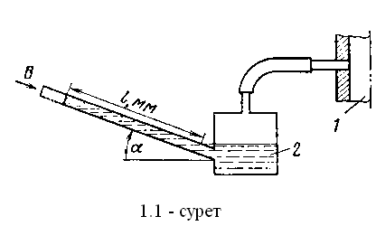

Берілгені:
Прибордың арнайы сүлбесі 1.1-суретте көрсетілген.

Егер α = 30° бұрышқа иілген 2-микроманометр түтікшесіндегі сұйық бағанының ұзындығы l = 180мм тең болса,
1-ауа өткізгішіндегі абсолюттік қысымды анықтау керек.
Жұмысшы сұйық –спирт, тығыздығы: ρ = 0.8 г/см3
Барометр көрсеткіші: 0.1020МПа.
Қысымды МПа, мм.сын.бағ., кгс/cм2 өлшем бірліктерінде өрнектеңіз.
*Ответ округляется до сотых (Өрнек: 2.94)